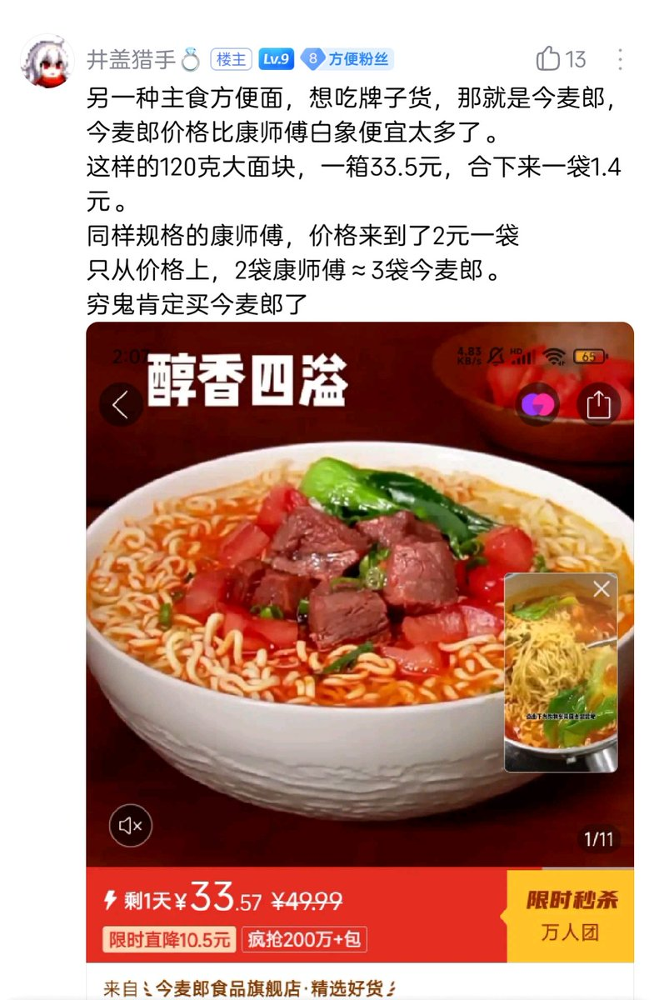

cjydfb
@fcjdfb
啊啊啊啊啊宿舍不让做饭吧这部分成本省不了，要不就只能方便面了。但营养不太好...7000没法过吧，如果单算吃饭可能还凑合，如果还要交水电费通话套餐费这些外加生活其他用品缺口还是不少。比如推特激励之类能补贴一点？
另一种主食方便面，想吃牌子货，那就是今麦郎，今麦郎价格比康师傅白象便宜太多了。
这样的120克大面块，一箱33.5元，合下来一袋1.4元。
同样规格的康师傅，价格来到了2元一袋
只从价格上，2袋康师傅≈3袋今麦郎。
穷鬼肯定买今麦郎了。

🍥爱晔🚀
@ye_and_yae
挑战7000块钱广州活一年
啊啊啊这咋过啊